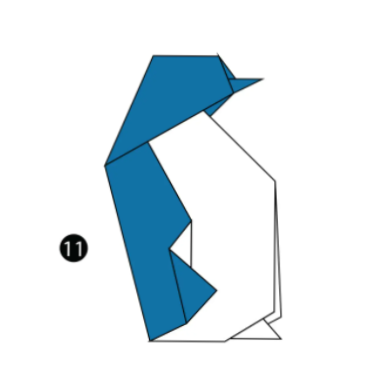

https://origami.me/penguin/
Penguin Facts
- Penguins can't be found in the North Pole
- The Galapagos Penguin is the only penguin species that travels north of the equator
- The Gentoo penguin can go up to 22 miles per hour
https://origami.me/flying-cicada/

Cicada Facts
- Using power tools near a cicada might make it think you are another cicada and land on you
- Only male cicadas make that loud sound you hear
- 7 species are called periodical cicadas because the only come out every 17 or 13 years
https://origami.me/panda/

Panda Facts
- Pandas have vertical slits as pupils
- Giant pandas spend around 10 to 16 hours eating a day
- While it doesn't seem like it, their black and white fur is really good camouflage
https://origami.me/camel/

Camel Facts
- A one humped camel is called a dromedary camel, an two humped one is Bactrian
- Camels can completely shut their noses in case of sandstorms
- Camels can travel at speeds up to 40 miles per hour, or 64 kilometers per hour